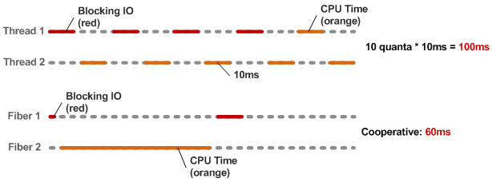

Cainã Costa
- @sryche
Disclaimer
- Minha primeira palestra na vida.
EVENTOS!!!1!onze!1

EventMachine
- Muito tempo perdido esperando I/O (Aplicações I/O Bound)
- Pouco tempo de real processamento
EventMachine
- Peça por I/O
- Processe outras coisas
- Quando o I/O voltar, continue o que estava fazendo
Callbacks!
Eventos são maneiros, mas...
- Eles são difíceis de testar
- Eles são difíceis de acompanhar
- Eles não são o que a maioria de nós está acostumada...
- Callback hell! :-(
Temos outras opções?
Threads no MRI não são concorrentes!
- (jRuby e Rubinius 2.0 escapam dessa)
Global Interpreter Lock

Fair Scheduler
- Cada Thread tem um tempo (10ms) para rodar
- Após isso, ela é interrompida e a próxima toma seu lugar
Fibers
- Funcionam de maneiras parecidas com Threads
- O scheduling fica a cargo do programador
- Mais leve/rápido, mas mais complexo
- Sem concorrência
Fibers vs Threads

Ok, mas como isso nos ajuda com nosso problema?
EventMachine!
- O EM roda I/Os em Threads separadas, e retorna um callback quando terminam
- Podemos colocar todo nosso código em Fibers, parar e resumir quando acabar
Podemos transformar isso...
require 'eventmachine'
require 'em-http'
EM.run do
url = "http://jsonip.com"
http = EM::HttpRequest.new(url).get timeout: 10
http.callback do |data|
url = "http://localhost:9292"
http = EM::HttpRequest.new(url).post timeout: 10,
body: {ip: data.response}
http.callback do |data|
puts data.response
EM.stop
end
end
endNum pedaço de amor em forma de código
require 'fiber'
require 'eventmachine'
require 'em-http'
def async_fetch(url, method = :get, params = {timeout: 10})
f = Fiber.current
http = EM::HttpRequest.new(url).send(method, params)
http.callback { f.resume(http) }
return Fiber.yield
end
EM.run do
Fiber.new{
puts "Setting up HTTP request #1"
data = async_fetch('http://jsonip.com/')
post = async_fetch('http://localhost:9292/',
:post, timeout: 10, body: {ip: data.response})
puts post.response
EM.stop
}.resume
endYay!
data = async_fetch('http://jsonip.com/')
post = async_fetch('http://localhost:9292/',
:post, timeout: 10, body: {ip: data.response})
puts post.responseEventMachine::Synchrony
Lembra do nosso exemplo? Então...
EM.run do
EM.synchrony do
data = EM::HttpRequest.new('http://jsonip.com/').get
post = EM::HttpRequest.new('http://localhost:9292/').
post(timeout: 10, body: {ip: data.response})
puts post.response
EM.stop
end
endO EM::Synchrony cuida da parte complicada pra gente...
- Coloca o bloco inteiro dentro de uma Fiber
- Cuida do scheduling da Fiber para parar/retornar assim que um I/O blocante ocorrer
Mas e se isso fosse aplicado para o Rack?
Goliath!
EventMachine + HTTP Parser rápido + Fibers = <3
Goliath::API
- Todo "Service" deve herdar dessa classe
- Fornece métodos para cuidar de requisições HTTP
- A API é diferente do rack, mas funciona da mesma maneira
Um "Service" do Goliath
require 'goliath'
class Hello < Goliath::API
def response(env)
[200, {}, "Hello World"]
end
endMiddlewares
- Possuem interface parecida com os do Rack, e funcionam da mesma maneira
- Funcionam por composição, podendo ser acumulados
Middlewares
require 'goliath'
class Hello < Goliath::API
use Goliath::Rack::Params # Te permite acessar os parâmetros rack-style
use Goliath::Rack::DefaultMimeType # Define Mime-types!
use Goliath::Rack::Formatters::JSON # Responde com JSON
use Goliath::Rack::Render # Adiciona o content-type automagicamente
use Goliath::Rack::Heartbeat # responde em /status with 200 (Monitoramento)
def response(env)
[200, {}, "Hello World"]
end
endStreaming
- Suportado nativamente, e com EventMachine fica ainda mais fácil
Streaming
require 'goliath'
class Stream < Goliath::API
def on_close(env)
env.logger.info "Connection closed."
end
def response(env)
i = 0
pt = EM.add_periodic_timer(1) do
env.stream_send("#{i}\n")
i += 1
end
EM.add_timer(10) do
pt.cancel
env.stream_send("!! BOOM !!\n")
env.stream_close
end
streaming_response(202, {'X-Stream' => 'Goliath'})
end
endRoteamento
- É feito com uma camada de Proxy, ligando cada serviço a um path.
- A classe de proxy não precisa definir o método #response
Roteamento
class HelloWorld < Goliath::API
def response(env) ; [200, {}, 'Hello World!']
end
class PostHelloWorld < Goliath::API
def response(env) ; [200, {}, 'Hello World!']
end
class APIRouter < Goliath::API
get '/hello_world', HelloWorld
post '/hello_world', PostHelloWorld
endConfiguração
- O goliath carrega automaticamente um arquivo com o mesmo nome, dentro da pasta
./config - Dentro desse arquivo,
configfica disponível como um hash. - Chaves definidas por esse hash viram métodos dentro do arquivo source.
Configuração
# Na config
config['redis'] = Redis.new
# No código
def response(env)
redis
endTestando
- Testar código do Goliath é tão simples quanto testar código não evented.
- O Goliath fornece um test_helper chamado
with_api(api_class), e o código roda dentro de um bloco
Testando
# spec_helper.rb
require 'goliath/test_helper'
RSpec.configure do |c|
c.include Goliath::TestHelper
end
# E no teste...
describe MyApi do
it "should work" do
with_api(MyApi) do |api|
api.config['mysql'] = mock # Dependency Injection!
response = get_request(path: '/status')
response.response_header.status.should eq 200
end
end
endFood for thought
- nio4r, celluloid, celluloid-io (ruby)
- NIO, Netty (java)
- node-fibers (javascript)
Referências
- http://goliath.io
- http://ruby-doc.org/core-1.9.3/Fiber.html
- http://www.igvita.com/2009/05/13/fibers-cooperative-scheduling-in-ruby/
- http://www.igvita.com/2010/03/22/untangling-evented-code-with-ruby-fibers/